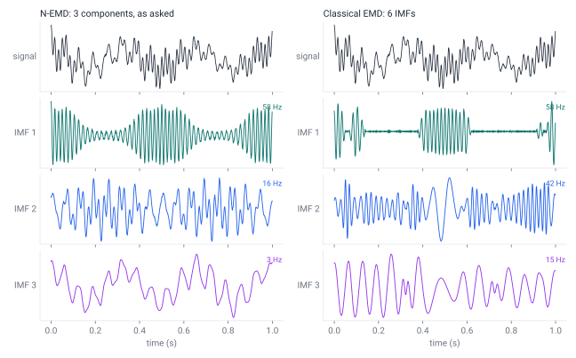

Empirical mode decomposition, learned and differentiable.
N-EMD replaces EMD's hand-tuned iterative sifting with a small neural network that predicts a bank of frequency filters. The components always add back up to the signal, you choose how many you get, and the whole thing trains end to end inside a larger PyTorch model.
pip install neural-emd
How it works
Classical EMD finds intrinsic mode functions (IMFs) by repeatedly fitting envelopes to a signal's peaks and troughs. It needs no assumptions, but it isn't differentiable, the number of IMFs is whatever the sifting happens to produce, and it is prone to mode mixing. N-EMD learns the split in the frequency domain instead, so it is differentiable and you choose how many components you get.
- SpectrumTake the signal's FFT.
- AnalyseA 1-D CNN reads magnitude and phase and predicts K filter responses.
- PartitionA softmax across the K filters makes them sum to one at every frequency.
- InvertEach filter is applied to the spectrum and transformed back into one IMF.
Guaranteed by construction
These hold for any weights, trained or not. Training only has to make the filters sharp, ordered by frequency and orthogonal.
Exact reconstruction
The filters sum to one, so the components always add back up to the input, to float precision.
Band-limited components
Every filter is non-negative, so each IMF is a bandpass of the signal, never something the signal doesn't contain.
No energy inflation
Together the components can't hold more energy than the signal itself, which classical EMD doesn't guarantee.
Example
One noisy second of three AM-FM tones at 50, 15 and 3 Hz, decomposed by N-EMD fitted
to that signal alone, next to classical EMD. This is the run in
examples/quickstart.py.

N-EMD IMF dominant frequencies (Hz): [58.0, 16.0, 3.0] N-EMD reconstruction error: 1.96e-07 N-EMD mode-mixing index: 0.241 EMD mode-mixing index: 0.236 (6 IMFs)
Use it
Install
pip install neural-emd
# with classical EMD / EEMD / VMD for comparison
pip install "neural-emd[baselines]"
The import name is nemd.
Decompose a batch
# model: a trained nemd.model.NEMD imfs, residual, meta = model(batch) # batch (B, T) -> imfs (B, K, T) # imfs.sum(1) == batch, exactly
Train on your own signals
from nemd.train import TrainConfig, train
result = train(TrainConfig(num_imfs=3, signal_length=1024, sample_rate=1000.0),
dataset_fn=my_signals) # (n_signals, config, seed) -> tensor (n, T)
model = result["model"]
| Module | What's in it |
|---|---|
nemd.model | NEMD, the filter-bank model, and NEMDSifting, the earlier iterative variant kept for ablations |
nemd.losses | Filter sharpness, frequency ordering, orthogonality and balance losses, combined in NEMDLoss |
nemd.train | TrainConfig, train, overfit_single_signal |
nemd.utils | Synthetic AM-FM, chirp and nonstationary signals; reconstruction error, orthogonality, mode-mixing and IF-tracking metrics |
nemd.classical | EMD, EEMD and VMD baselines (with the [baselines] extra) |
Status
Research code, alpha: the API may change before 1.0. A paper describing the method and its evaluation is in preparation. Until it's out, please cite the GitHub repository if you use N-EMD. Issues and pull requests are welcome.